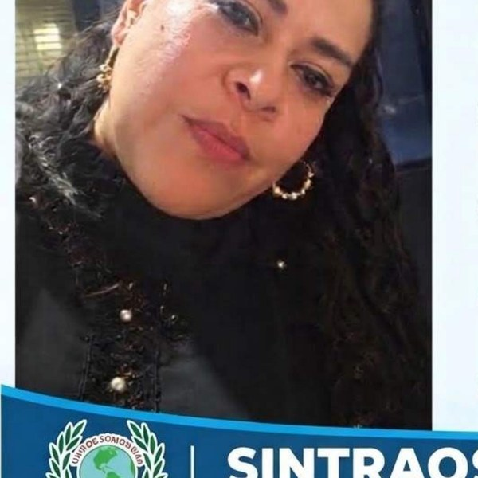
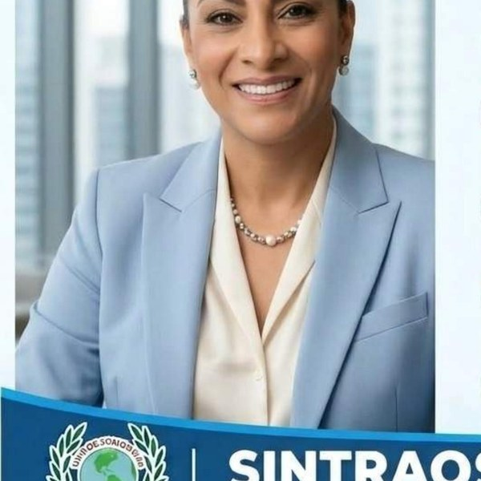
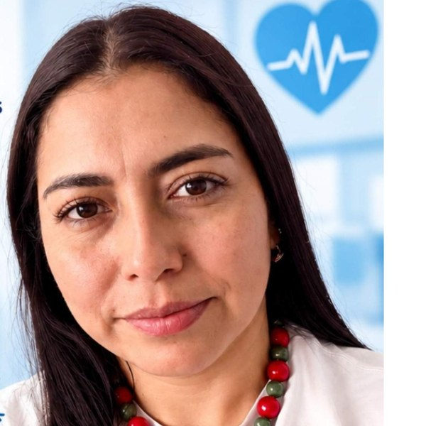
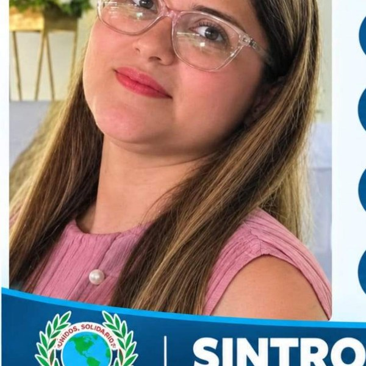
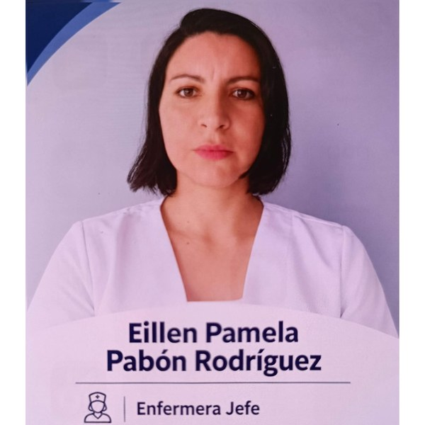

Regional con afiliados activos en Villavicencio y los llanos orientales, con junta subdirectiva propia.
Dirección: por confirmar.
Principales empresas donde trabajan: Centros Médicos Colsanitas (10) · Clínica Colsanitas (8).
Base de afiliados SINTRAOSI, septiembre de 2026.
Martha Yulied Guzmán Vallejo
El equipo que representa a los afiliados de SINTRAOSI en Villavicencio y los llanos orientales.
Presidencia

Vicepresidencia

Secretaría, tesorería y secretarías



Comunicados y novedades publicadas específicamente para Villavicencio.